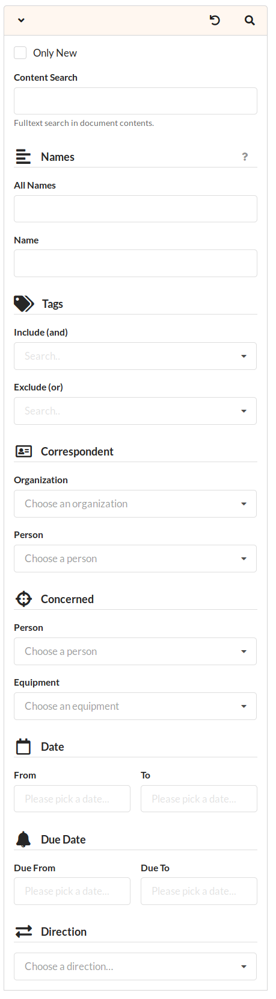

Finding Items
Items can be searched by their annotated meta data and their contents using full text search. The landing page shows a list of current items. Items are displayed sorted by their date, newest first.
Docspell has two modes for searching: a simple search bar and a search menu with many options. Both are active at the same time, but only one is visible. You can switch between them without affecting the results.
Search Bar

By default, the search bar is shown. It provides a refined view of the search menu. The dropdown contains different options to do a quick search.
All Names and Contents
These two options correspond to the same named field in the search menu. If you switch between search menu and search bar (by clicking the icon on the left), you’ll see that they are the same fields. Typing in the search bar also fills the corresponding field in the search menu (and vice versa).
- The All Names searches in the item name, item notes, names of correspondent organization and person, and names of concering person and equipment. It uses a simple substring search.
- The option Contents searches the contents of all attachments (documents), attachment names, the item name and item notes. It uses full text search. However, it does not search the names of attached meta data.
When searching with one of these fields active, it simply submits the (hidden) search menu. So if the menu has other fields filled out, they will affect the result, too. Using one of these fields, the bar is just a reduced view of the search menu.
So you can choose tags or correspondents in the search menu and further restrict the results using full text search. The results will be returned sorted by the item date, newest first.
If the left button in the search bar shows a little blue bubble, it means that there are more search fields filled out in the search menu that you currently can’t see. In this case the results are not only restricted by the search term given in the search-bar, but also by what is specified in the search menu.
Contents Only
This option has no corresponding part in the search menu. Searching with this option active, there is only a full text search done in the attachments contents, attachment names, item name and item notes.
The results are not ordered by item date, but by relevance with respect to the search term. This ordering is returned from the full text search engine and is simply transfered unmodified.
Search Menu

The search menu can be opened by clicking the left icon in the top bar. It shows some options to constrain the item list:
Show new items
Clicking the checkbox “Only new” shows items that have not been “Confirmed”. All items that have been created by docspell and not looked at are marked as “new” automatically.
Names
Searches in names of certain properties. The All Names field is the
same as the search in the search bar (see above).
The Name field only searches in the name property of an item.
Tags
Specify a list of tags that the items must have. When adding tags to the “Include” list, an item must have all these tags in order to be included in the results.
When adding tags to the “Exclude” list, then an item is removed from the results if it has at least one of these tags.
Correspondent
Pick a correspondent to show only these items.
Concerned
Pick a concerned entity to show only these items.
Date
Specify a date range to show only items whose date property is within this range. If you want to see items of a specific day, choose the same day for both fields.
For items that don’t have an explicitly date property set, the created date is used.
Due Date
Specify a date range to show only items whose due date property is within this range. Items without a due date are not shown.
Direction
Specify whether to show only incoming, only outgoing or all items.
Customize Substring Search
The substring search of the All Names and Name field can be
customized in the following way: A wildcard * can be used at the
start or end of a search term to do a substring match. A * means
“everything”. So a term *company matches all names ending in
company and *company* matches all names containing the word
company. The matching is case insensitive.
Docspell adds a * to the front and end of a term automatically,
unless one of the following is true:
- The term already has a wildcard.
- The term is enclosed in quotes
".
Full Text Search
The Query
The query string for full text search is very powerful. Docspell currently supports Apache SOLR as full text search backend, so you may want to have a look at their documentation on query syntax for a in depth guide.
- Wildcards:
?matches any single character,*matches zero or more characters - Fuzzy search: Appending a
~to a term, results in a fuzzy search (search this term and similiar spelled ones) - Proximity Search: Search for terms that “near” each other, again
using
~appended to a search phrase. Example:"cheese cake"~5. - Boosting: apply more weight to a term with
^. Example:cheese^4 cake– cheese is 4x more important.
Docspell will preprocess the search query to prepare a query for SOLR. It will by default search all indexed fields, which are: attachment contents, attachment names, item name and item notes.
The Results
When using full text search, each item in the result list is annotated with the highlighted occurrence of the match.